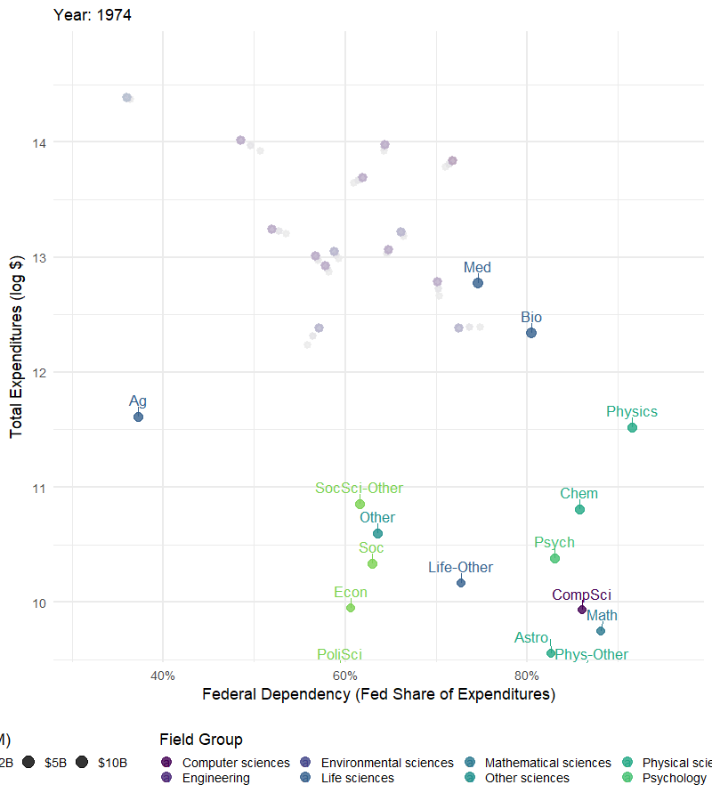
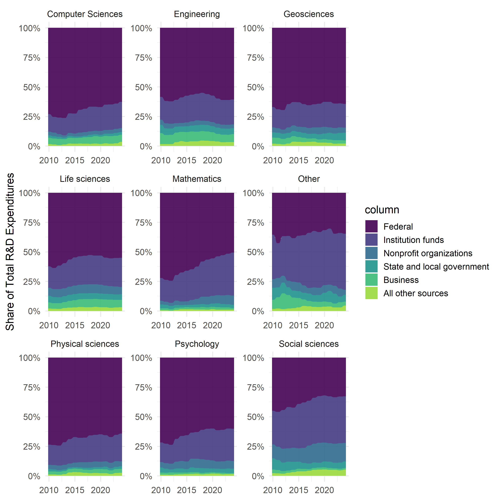
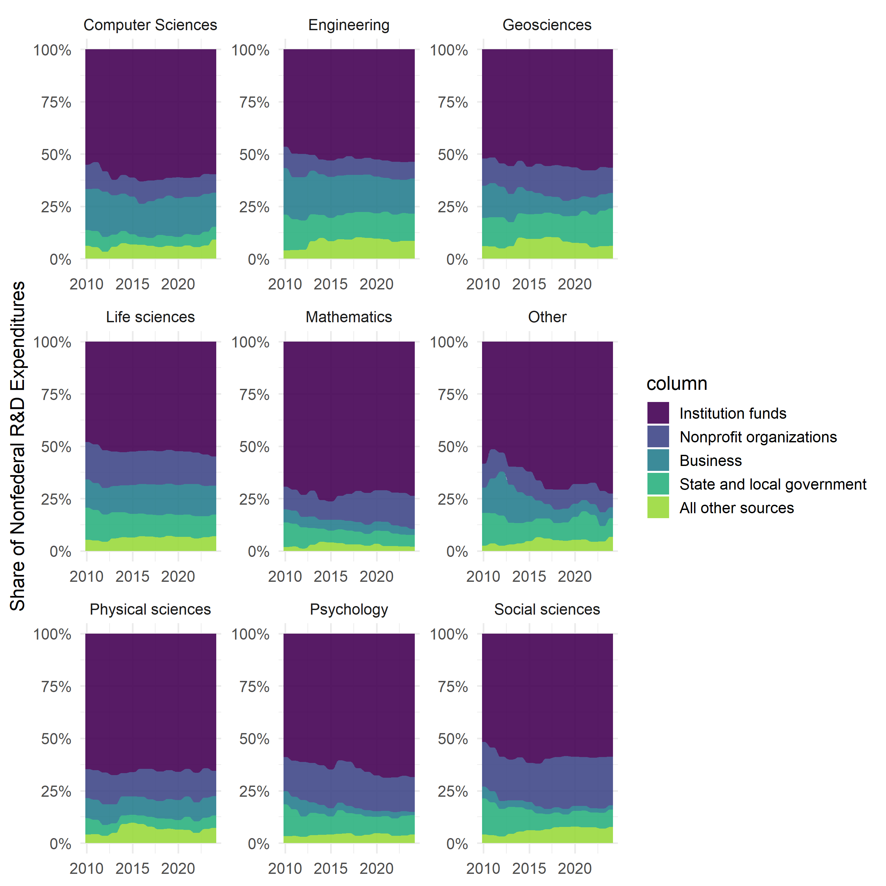
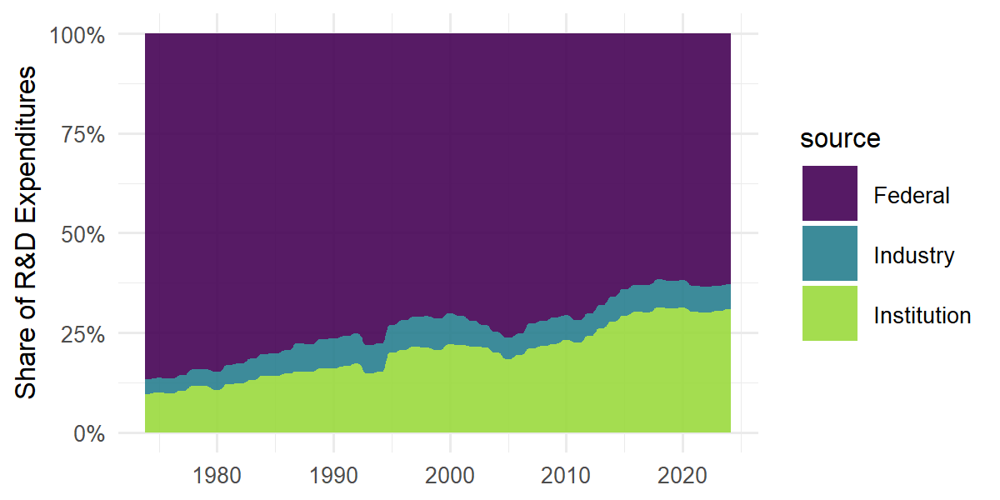
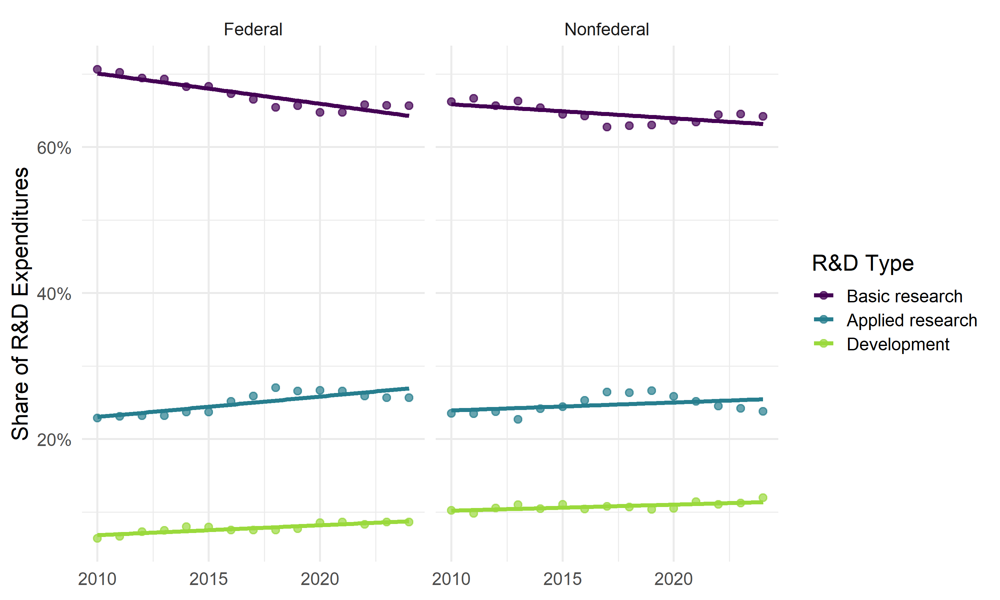
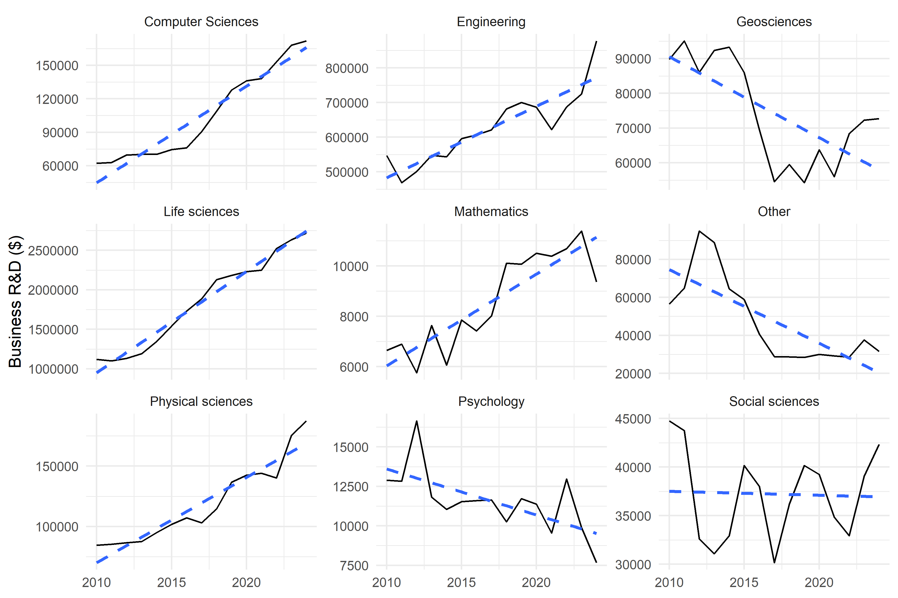
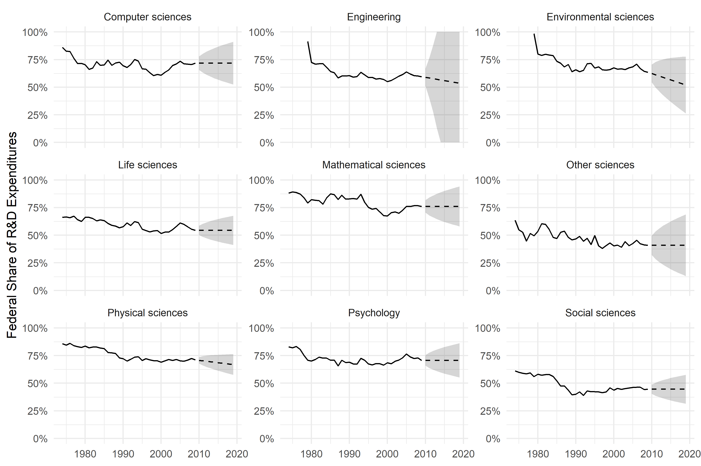

Federal Funding Dependency Varies Substantially by Research Field at R1 Universities
Executive Summary
Problem: Federal funding is the dominant source of research and development (R&D) expenditures at R1 universities, but aggregate trends obscure substantial variation across scientific disciplines. As federal budgets face pressure and policy priorities shift, understanding which fields are most dependent on federal dollars – and how that dependency has changed over time – is essential for anticipating the impact of funding disruptions on the broader research pipeline.
Approach: This analysis extends prior work on aggregate federal funding dependency at R1 institutions by examining field-level variation using the NSF Higher Education Research and Development (HERD) Survey (1974–2024). Federal share of total R&D expenditures is calculated for 24 science and engineering sub-fields across five decades. I investigate how funding investments vary by sector and field over time including R&D types (basic, applied, development), where data are available based on HERD survey questions (which changed in 2010). ARIMA forecasting projects federal share trajectories through 2034 by broad field. Forecasts assume continuation of historical patterns and do not account for the 2025 federal funding disruptions and the planned 2026, including the signalling from the NSF that the social sciences directorate is to be phased out by 2027.
Insights: Federal dependency has declined across virtually every S&E field since a peak in 1979, coinciding with the post-Cold War unwinding of defense and space-race research investment. Physical sciences and geosciences remain the most federally dependent fields; social sciences and life sciences have seen the largest absolute declines but show flat forecasts, suggesting a floor effect. Federal dollars are shifting away from basic research toward applied research faster than nonfederal dollars, while industry investment is not filling the basic research gap – it is growing only in the fields that have specific consumer (computer sciences) or health applications (life sciences). Foreign funding share peaked in 2016–2017 and has plateaued, reflecting COVID disruptions and potential geopolitical decoupling.
Significance: The field-level picture reveals a more fragmented and uneven research funding landscape than aggregate trends suggest. Disciplines like physical sciences and geosciences face both high federal dependency and declining investment, with little nonfederal backstop. The simultaneous shift toward applied R&D types driven by federal priorities raises questions about the long-term health of basic research – particularly in fields where industry shows no compensating interest.
Key Findings
- Federal dependency peaked across all S&E fields in 1979 and has declined steadily since; engineering and environmental sciences entered the survey in 1979, coinciding with the founding of the Department of Energy.
- Physical sciences (astronomy, physics) remain the most federally dependent fields (70%+); social sciences and agricultural sciences are least dependent (35–50%), with larger institutional shares for the former.
- Federal dollars are shifting away from basic research (-0.42%/year) toward applied research (+0.28%/year) faster than nonfederal dollars, indicating that federal priorities – not institutional choices – are driving the R&D type shift–with the caveat that basic research still dominates.
- Business investment in university R&D is growing only in computer sciences (+8.2%/year relative) and life sciences (+6.9%/year), fields already oriented toward applied work; investments are declining in geosciences, psychology, and social sciences.
- ARIMA forecasts project continued decline in federal share across engineering, environmental sciences, and physical sciences through 2034, with social sciences and life sciences holding relatively flat.
Research Question
How does federal dependency vary across S&E fields at R1 institutions over time and what do R&D funding patterns reveal about changes in the research pipeline?
Research Answers
Federal Dependency by Field Over Time
Federal share of total R&D expenditures varies substantially across S&E sub-fields and has shifted markedly over five decades. The animated figure below shows federal dependency (x-axis) against total R&D expenditure (y-axis, log scale) for 24 sub-fields from 1974 to 2009. Bubble size encodes total R&D expenditure. Engineering and environmental sciences sub-fields enter the series in 1979, coinciding with the founding of the Department of Energy and the addition of these fields to the HERD survey instrument. Across all fields, federal share peaked in 1979 – the tail end of Cold War and space-race investment – and has declined since. Physical sciences (astronomy, physics) maintain the highest dependency throughout; life sciences (medical, biological) carry the highest total R&D expenditure but sit at mid-range dependency; social sciences cluster at low dependency with little movement. Engineering enters at ~90%+ federal share in 1979 and declines most steeply, reflecting early DOE-driven investment giving way to diversified funding.
Figure 1. Federal share of R&D expenditures by sub-field, 1974–2009. Bubble size indicates total R&D expenditure (log scale). Color indicates broad field group.

Interpretation: As shown in Figure 1, physical sciences maintain the highest federal dependency and high total R&D expenditure throughout the series while social sciences have low dependency and low total expenditure. Engineering sub-fields enter at very high dependency (~90%+) in 1979 and decline rapidly.
The 1979 peak is not an artifact. Federal R&D as a share of GDP reached 1.86% at its prior peak in 1964; by 2021 it had fallen to 0.66%, with business funding rising to 2.52%. The animation captures the institutional consequence of that national-level shift – universities absorbing a declining federal share across every discipline simultaneously, while total R&D expenditures continued to grow. A brief uptick is visible around 2010–2011, reflecting the American Recovery and Reinvestment Act (ARRA) infusion of federal research dollars during the economic recovery, before the decline resumes from 2012 onward. Table 1 summarizes peak share, peak year, minimum share, and net change per sub-field. Engineering bioengineering and biomedical is the only sub-field showing net positive change (+10.2%), reflecting the growth of NIH-adjacent translational research over the period. Agricultural sciences shows the smallest absolute decline (-1.3%), consistent with its historically low federal share and stable USDA funding base.
Table 1. Federal share of R&D expenditures by sub-field: peak, minimum, and net change, 1974–2009.
| Field | Peak share | Peak year | Min share | Net change |
|---|---|---|---|---|
| Engineering, Aero/Astro | 99.4% | 1979 | 62.0% | -29.3% |
| Environmental sciences, Atmos | 98.8% | 1979 | 72.2% | -26.4% |
| Engineering, Elec | 98.7% | 1979 | 55.6% | -34.4% |
| Environmental sciences, Earth | 98.7% | 1979 | 60.1% | -32.6% |
| Environmental sciences, Ocean | 98.7% | 1979 | 58.7% | -40.0% |
| Engineering, Mech | 98.3% | 1979 | 53.6% | -36.5% |
| Environmental sciences, Other | 97.4% | 1979 | 43.0% | -40.3% |
| Engineering, Other | 96.6% | 1979 | 46.2% | -48.1% |
| Engineering, Chem | 95.7% | 1979 | 50.4% | -39.0% |
| Physical sciences, Physics | 92.2% | 1976 | 67.9% | -15.8% |
| Physical sciences, Astro | 86.9% | 1985 | 70.8% | -6.1% |
| Physical sciences, Chem | 85.8% | 1974 | 63.7% | -18.4% |
| Physical sciences, Other | 84.8% | 1976 | 52.2% | -18.1% |
| Life sciences, Bio | 80.8% | 1975 | 62.1% | -14.9% |
| Life sciences, Other | 77.4% | 1975 | 57.2% | -15.6% |
| Life sciences, Med | 74.6% | 1974 | 53.9% | -15.6% |
| Social sciences, Soc | 73.3% | 1980 | 48.3% | -9.8% |
| Engineering, Mats | 67.5% | 2005 | 56.4% | -0.4% |
| Engineering, Civil | 66.4% | 1980 | 50.0% | -8.3% |
| Engineering, Bio | 64.7% | 2009 | 50.4% | +10.2% |
| Social sciences, Other | 61.6% | 1974 | 28.0% | -18.8% |
| Social sciences, Econ | 60.7% | 1978 | 37.9% | -17.9% |
| Social sciences, PoliSci | 59.4% | 1974 | 28.1% | -19.6% |
| Life sciences, Ag | 46.4% | 1977 | 28.8% | -1.3% |
Sub-Field Trends in Federal Dependency
The interactive figure below shows loess-smoothed federal share trends for each sub-field from 1974 to 2009, faceted by broad field group. Lines are colored by rank of ending federal share value – darker lines indicate higher federal dependency at the end of the series. Hover over a line to identify the sub-field.
Decline is near-universal across sub-fields, but rates differ substantially within broad fields. In engineering, aeronautical and astronautical sciences maintain the highest dependency while civil and general engineering decline furthest – a gap of nearly 20 percentage points by end of series. In life sciences, biological and medical sciences hold above 50% while agricultural sciences fall to ~35%, reflecting heavy USDA and institutional funding in that sub-field rather than federal research grants. Social sciences show the most compressed range, with all sub-fields declining modestly and clustering between 35–55% by end of series – the narrowest spread of any broad field group. Physical sciences show the opposite pattern: a wide spread maintained throughout, with astronomy remaining above 70% and physical sciences other falling below 60%.
Figure 2. Federal share of R&D expenditures by sub-field, 1974–2009. Lines smoothed using loess. Color indicates relative federal dependency rank within each broad field at end of series (darker = higher dependency).
Interpretation: As shown in Figure 2, within-field variation is as important as between-field variation – the sub-field a researcher works in matters as much as the broad discipline for understanding federal funding exposure.
R&D Funding Sources by Broad Field
The figures below show the composition of total R&D funding (federal and nonfederal) and nonfederal funding only, by broad field from 2010 to 2024. Data are from the HERD survey questions on federal expenditures by field and agency and nonfederal expenditures by field and source. These data are available only from 2010 onward following the HERD survey instrument change.
Federal funding dominates across all broad fields, but the degree varies substantially. Physical sciences and environmental sciences show the highest federal share (~75%+), consistent with the sub-field trends in Figure 1 and Figure 2. Life sciences show a notable nonprofit component alongside federal funding, reflecting NIH-adjacent foundation and voluntary health organization support. Engineering shows the largest business component of any field, though it remains small relative to federal and institutional shares.
Figure 3. Share of total R&D expenditures by funding source and broad field, 2010–2024. Sources stacked by average share across all years.

Interpretation: As shown in Figure 3, federal funding dominates total R&D expenditures across all fields, with physical sciences and environmental sciences most dependent and life sciences showing the largest nonprofit share of any broad field group.
Institution funds dominate nonfederal expenditures across all fields, indicating that universities themselves are the primary backstop when federal funding falls short. Nonprofit organizations are the second-largest nonfederal source in life sciences, consistent with the prominence of disease-focused foundations. Business funding is most visible in engineering and computer sciences, but remains a small share of nonfederal expenditures even in those fields – a finding that becomes more significant in the context of the R&D type shifts examined below.
Figure 4. Share of nonfederal R&D expenditures by source and broad field, 2010–2024. Sources stacked by average share across all years.

Interpretation: As shown in Figure 4, institution funds are the primary nonfederal backstop across all fields – universities are absorbing risk, not replacing revenue.
The aggregate picture confirms that this pattern has been stable since 1974 – federal dominance, growing institution funds, and minimal industry contribution – a structural feature of university R&D financing that has not shifted in 50 years.
Figure 5. Aggregate share of R&D expenditures by source, 1974–2024.

Interpretation: As shown in Figure 5, the aggregate source mix has been remarkably stable since 1974, with federal dominance unchanged and industry contribution remaining minimal throughout the full series.
Shifts in R&D Type: Basic, Applied, and Development
Federal and nonfederal funding differ in how they are allocated across R&D types. The figure below shows shares of basic research, applied research, and experimental development from 2010 to 2024, with linear trend lines faceted by federal and nonfederal funding.
Figure 6. Share of R&D expenditures by type (basic, applied, development), faceted by federal and nonfederal source, 2010–2024. Points show annual values; lines show linear trend.

As shown in Figure 6 and Table 2, federal dollars are shifting away from basic research faster (-0.42%/year) than nonfederal dollars (-0.19%/year), and toward applied research faster (+0.28%/year vs +0.11%/year). Development is increasing in both but slowly. The magnitude of the federal shift is roughly double the nonfederal shift across all three R&D types, indicating that federal agencies are reorienting their university research portfolios toward near-term application at a pace that institutional and philanthropic funders are not matching. This means federal funding priorities – not institutional or philanthropic choices – are the primary driver of the overall shift away from basic science at R1 universities.
Table 2. Linear model slopes for R&D type shares by funding source, 2010–2024 (%/year).
| R&D Type | Federal slope | Nonfederal slope |
|---|---|---|
| Basic research | -0.42 | -0.19 |
| Applied research | +0.28 | +0.11 |
| Development | +0.14 | +0.08 |
Interpretation: As shown in Figure 6 and Table 2, federal funding is driving the shift away from basic research at roughly twice the rate of nonfederal funding – a structural reorientation of the university research pipeline that cannot be attributed to institutional choice alone.
Business Investment by Field
If federal funding is shifting toward applied research, one might expect industry to fill the basic research gap. The figure below shows business R&D investment trends by broad field from 2010 to 2024.
Figure 7. Business R&D expenditures by broad field, 2010–2024. Dashed line shows linear trend.

As shown in Figure 7 and Table 3, business investment is growing in the fields already most oriented toward applied and translational work – computer sciences (+8.2%/year relative growth) and life sciences (+6.9%/year) – and declining in geosciences, psychology, and social sciences. The fields gaining industry investment are already the most commercially relevant; the fields losing it are those with the least commercial application. This confirms that industry is not compensating for the federal shift away from basic research – it is amplifying the applied turn in fields already moving in that direction, while withdrawing from fields that depend most heavily on public investment for their research identity.
Table 3. Relative growth rate of business R&D investment by broad field, 2010–2024 (%/year).
| Field | Relative growth (%/year) |
|---|---|
| Computer Sciences | +8.2 |
| Life sciences | +6.9 |
| Physical sciences | +5.9 |
| Mathematics | +4.3 |
| Engineering | +3.3 |
| Social sciences | -0.1 |
| Psychology | -2.5 |
| Geosciences | -3.1 |
| Other | -8.2 |
Interpretation: As shown in Figure 7 and Table 3, industry investment is not filling the basic research gap – it is growing only where federal dollars are also shifting toward application, leaving fields dependent on basic research funding with no compensating source.
Forecasting Federal Dependency by Broad Field
ARIMA models were fit to annual federal share by broad field using data from 1974 to 2024. The figure below shows historical trends and 10-year forecasts with 95% confidence intervals. Forecasts assume continuation of historical patterns and do not account for the 2025 federal funding disruptions, which are likely to accelerate declines in fields targeted by recent executive actions.
Engineering shows the widest confidence interval of any field – a direct consequence of the high volatility introduced when engineering sub-fields entered the survey in 1979 at near-total federal dependency and declined rapidly over the following two decades. That early period dominates the variance estimate and makes the engineering forecast the least reliable. Physical sciences and environmental sciences forecast continued gradual decline, consistent with the long downward trend visible in Figures 1 and 2. Social sciences and life sciences forecast relatively flat trajectories, suggesting a floor effect where institutional and nonfederal sources absorb further federal retreat at current dependency levels. All forecasts carry substantial uncertainty and should be read as directional signals; the 2025 policy environment makes downward departures from these baselines plausible in the near term for all fields.
Figure 9. Federal share of R&D expenditures by broad field, 1974–2024, with ARIMA forecast to 2034. Dashed line shows forecast; shaded area shows 95% confidence interval.

Interpretation: As shown in Figure 9, all fields are forecast to maintain or decline in federal dependency through 2034 under historical trend assumptions – there is no field where the model projects recovery.
Next Steps
- Non-R1 comparison: The most significant gap in this analysis is the absence of non-R1 institutions. Community colleges, teaching universities, and minority-serving institutions engage in R&D at lower volumes but with different funding compositions. A companion analysis using the full HERD population would reveal whether field-level dependency patterns are R1-specific or systemic.
- Non-S&E fields: Education research, collected in HERD from 2003 onward, was excluded from the main analysis due to the short series and the structural non-comparability with S&E fields. A focused analysis of education R&D funding – particularly its high federal share and volatility – would complement this work given current policy debates.
- Agency-level breakdown: The HERD question on federal expenditures by field and agency (DOD, DOE, HHS, NASA, NSF, USDA) enables a finer-grained analysis of which agencies drive dependency in which fields. This would be particularly valuable for assessing the impact of agency-specific budget changes.
- 2025 policy shock: The forecasts in this analysis are based on historical patterns and cannot capture the effects of 2025 federal funding disruptions. A follow-up analysis using 2025 and 2026 HERD data when available would provide an empirical baseline for assessing the impact of executive actions on field-level funding.
Study Design
Data Source: NSF National Center for Science and Engineering Statistics (NCSES) Higher Education Research and Development (HERD) Survey, fiscal years 1974–2024. Data accessed via the NCSES data portal. The HERD Survey replaced the Academic R&D Expenditures Survey in FY 2010; data from both instruments are included in this analysis.
Data Handling: Analysis is restricted to R1 doctoral universities (Carnegie Classification) matched to HERD institutions via cleaned institution names. Non-S&E fields (business, humanities, law, social work, visual and performing arts) are excluded from the main field-level analysis due to structural data gaps before 2003 and their limited relevance to the core research pipeline question. The “All” and field-group aggregate rows are excluded to avoid double-counting; analysis uses sub-field rows only for the bubble and loess figures, and broad field aggregates for the alluvial and forecast figures. Federal share is calculated as federal expenditures divided by total expenditures for each field-institution-year observation. Observations with missing federal share (NA) are excluded; these represent structural gaps in reporting, not true zeros. Nonfederal source and R&D type data are available from 2010 onward only, reflecting the HERD instrument change. A NCSES typo (“Nonprofit organziations”) is corrected in the analysis script.
Analytical Approach:
- Federal share of total R&D expenditures calculated by sub-field and year across all R1 institutions
- Animated bubble chart: mean federal share (x) vs log total expenditure (y) by sub-field and year, 1974–2009
- Faceted interactive loess chart: federal share trends by sub-field, colored by end-of-series dependency rank
- Alluvial charts: funding source composition (federal + nonfederal) by broad field, 2010–2024
- Linear models fit to R&D type shares (basic, applied, development) by federal and nonfederal source, 2010–2024
- Linear models fit to business investment by broad field, 2010–2024, with relative growth rates calculated as slope divided by mean total
- Foreign funding share calculated relative to total R&D expenditures, 2010–2024
- ARIMA models (auto.arima) fit to annual mean federal share by broad field, 1974–2024, with 10-year forecasts and 95% confidence intervals
Project Resources
Repository: kchoover14/r1-federal-funding-dependency-fields
Data:
- HERD Survey data (FY 1974–2024), NSF NCSES – raw data and cleaned data stored in
data/folder, not pushed to repo due to file size - carnegie-r1.csv data shared.
NOTE: to recreate the data, go to https://github.com/kchoover14/r1-federal-funding-dependency scripts for herd data and final data
Code:
prep-herd_data-fields.R– filters and cleans raw HERD data for questions of interestprep-final_data.R– joins HERD data to Carnegie R1 classification via exact and fuzzy matchinganalysis.R– data preparation, all figures, tables, and ARIMA forecasts
Project Artifacts:
- Figures (n=9): PNG and GIF outputs in
outputs/ - Interactive figure (n=1):
outputs/federal_share_by_field.html
Environment:
renv.lockandrenv/– restore withrenv::restore()
License:
- Code and scripts © Kara C. Hoover, licensed under the MIT License.
- Data, figures, and written content © Kara C. Hoover, licensed under CC BY-NC-SA 4.0.
Tools & Technologies
Languages | R
Tools | Quarto | GitHub Pages
Packages | dplyr | tidyr | ggplot2 | ggrepel | gganimate | ggiraph | ggalluvial | htmlwidgets | forecast | viridis | scales | stringr | readxl | fuzzyjoin | stringdist | janitor | gifski
Expertise
Domain Expertise: Higher education policy | Research funding analysis | Federal science policy | Time series analysis
Transferable Expertise: This project demonstrates the capacity to translate large longitudinal administrative datasets into field-level policy intelligence – identifying which scientific disciplines face structural funding risk and where compensating investment is and is not emerging, at a level of specificity that supports targeted institutional and federal policy response.